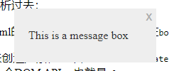
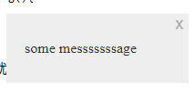

作为编程语言，函数是极其重要的一环。基本来说，函数就是一块可以重复使用的代码。
在前面没有系统学习function前，我们就已经在使用函数了，只不过是浏览器内置的。比如替换某个string使用的string.replace('string', 'newString')就是一种内置函数，使用后面的string替换前面的。
同理，还有很多内置的函数，基本上使用了小括号的非内置语法（比如loop，if等等）都是函数。因此类似math.random()和string.join()都属于函数
JS有很多内置函数，当我们invoke（或者run，execute）这些函数的时候，其实有一部分是使用浏览器代码运行的，也就是底层语言，类似C++的。另外还有许多内置函数并不是JS内的，而是属于浏览器API，因此甚至可以提供更多的功能
我们将属于object的一部分的function称为method，虽然之前还没有细分过，但是已经用过很多次了。而我们自己在JS内创建的函数则被称为custom function, 这些函数，内置函数，method都在之前的随机画圈圈代码用过，详见loops
当我们define（或declare）一个函数后，我们可以运行（invoke，run）它，方法是使用函数名和小括号，以及需要的参数（parameter）。有的函数，比如math.random()是不需要任何参数的，他会返回一个0~1的随机数。而有的函数需要参数才能运行，比如replace。也有的函数有optional
parameter，也就是可以选要不要参数，比如join()在没有参数的时候默认是使用逗号来将array内的字符串连起来
假设我们想自己创造optional parameter的函数，那么可以在函数的参数处设置一个默认值。下面的代码块就是一个例子，当invoke时若没有给参数，那么默认值就是ass
function printInput(input = 'ass'){
console.log(`Hello ${input}`);
}
其实除了我们还可以不给函数名称，一般来说这种无名(Anonymous函数会被当作参数，嵌套在其他的函数内。例子如下：
function (){
alter('wuhu nice');
}
假设我想要创造一个函数，当用户在text
box内输入了某个东西的时候就运行一些代码。我们可以使用addEventListener()函数来实现，这个函数需要至少两个参数，一个是需要关注的event，在这个例子内就是keydown，而另外一个例子则是event发动时启动的函数。
那么按照正常做法，我们需要单独写一个函数，也就是按下按键对应的行为。
function keyRxn(event) {
alert(`you have pressed ${event.key}`);
}
textBox.addEventListener("keydown", keyRxn);
上面的代码就是正常的写法，我们首先定义了keyRxn，也就是按下的反应，然后使用addEventListener来引用它。但是使用匿名函数是完全没问题的，如下：
textBox.addEventListener('keydown', function(){
alert(`you have pressed $(event.key)`);
})
假设想要使用类似上面的匿名函数，还有一个办法，称为arrow
function，基本来说就是将function(event)换成（event)=>{}
textBox.addEventListener('keydown', (event） => {
alert(`you have pressed ${event.key}`);
});
如果这个函数只有一行，那么也可忽略掉花括号，变成下面这样：
textBox.addEventListener('keydown', (event) => console.log(`you have pressed ${event.key}`));
如果这个函数只有一个参数，那么甚至还可以把参数的小括号去掉，变成event => console.log(`you have....`)
假设这个函数只有一行且需要return值出去，那么也可去掉return关键词，比如我想要在一行内将某个array内的数字翻倍，可以使用以下代码：
const nums = [1,2,3];
const double = nums.map((num)=> num *2);
console.log(double);
基本的逻辑也很简单，使用map来将array内的项目进行函数的处理，而这个函数就是(num) => num*2。这个arrow function和function double(num){return num
*2}是一个效果的，只不过前者不能多次引用。
之前使用函数实现的textbox response，若使用arrow func实现，那么代码如下：
const textBox = document.querySelector('#textbox');
const output = document.querySelector('#output');
textBox.addEventListener('keydown', (event) => output.textContent = `you pressed ${event.key}`);
以及对应的html代码：
<input id="textbox" type="text"> </input>
<div id ='output'></div>
当处理函数问题的时候，我们需要注意scope，也就是函数的局限性。一个函数内定义的变量以及其他东西均被储存在其函数的scope内，意思是无法在其他地方进行引用。而函数外称为global scope，是可以在任意地方引用的。
这种设计是比较符合逻辑的，一般来说，让用户不能接触到函数内的变量是为了安全。还有的时候是为了组织问题。比如我将一个const放在函数外面，然后在两个JS file内一起引用，此时只有第一个有效，因为const只能被定义一次。
来开始建一个方程把，叫做displayMessage()，用来展示一个message
box来代替浏览器的alert()函数。
浏览器的alert函数可以接受一个字符串参数，也就是用于展示的字符串。但是alert函数是有自己的局限性的，比如我们无法调整颜色，icon或其他的东西。
在开始写函数之前，首先得知道函数的命名方式和变量是一样的，也就是lowerCamel。然后开始写函数的第一步就是命名和框架：
function diaplayMessag(){
}
然后将函数主体加进去，就算完成了：
function displayMessage(){
const body = document.body;
const panel = document.createElement('div');
panel.setAttribute('class','msgBox');
body.appendChild(panel);
const msg = document.createElement('p');
msg.textContent = 'This is a message box';
panel.appendChild(msg);
const closeBtn = document.createElement('button');
closeBtn.textContent = 'x';
panel.appendChild(closeBtn);
closeBtn.addEventListener('click', () => panel.parentNode.removeChild(panel));
}
这里面有很多代码，我们一个一个分析过去：
首先第一行代码使用DOM API来选中html的body元素，然后将其储存在body变量内
第二块代码依旧是使用了DOM
API来创造元素，也就是document.createElement()，使用panel变量来把刚刚创建的div储存起来。然后使用另外一个DOM
API，也就是Element.setAttribute()来给刚刚的div设置一个class，为msgBox。这个样子我们就可以在head内调整css了。然后使用一个DOM函数Node.appendChild把刚刚
第三块代码和第二段代码是一个逻辑的。只不过这次生成的是p元素，更改的是textContent。然后把msg加在panel下面
最后创建一个button，更改这个button的textcontent。最后使用addEventListener来关注这个button，一旦点击后就运行Node.removeChlid()函数，将定义的html元素下的child移除。效果可以刷新浏览器看：
如果想要网页打开的时候就展示，那么直接在scirpt内call即可。但是肯定还有别的办法，比如我想要创建一个button，让这个msgbox在被点击后才开启，那么同理我们可以使用一个addEventListener()来探测click，并且对应执行函数。代码和效果如下：
const btn = document.querySelector("div button");
btn.addEventListener("click", displayMessage);
这里需要注意的是，我们使用的函数是没有加上括号的。类似这样的括号被称为function invocation operator，仅在需要函数立即在其scpe内运行的时候使用。也就是说如果我们想要严格的根据event，那么就需要延迟触发，去掉小括号即可。
现在已经完成了基本的功能，得到的msg如下
而这肯定还是有提升空间的，首先就是调整parameter，比如我可以加上一个参数，用来替换msgbox的文字内容。也可加第二个参数，定义msgbox的类型，以此调整外观。
先说第一个，逻辑很简单，加参数，更改函数内的msgbox的textContent即可。代码如下：
msg.textContent = msgText;
还有一个问题，就是启动函数的button也要调整，注意因为之前讲过的原因，在函数启动button内也必须得延迟触发，这次括号里面有参数，所以我们可以使用匿名函数来实现：
btn.addEventListener('click', ()
=> displayMessage('some messsssssage'));
此时的box如下：
然后我们就可以进行第二个参数的配置了。这里打算的是使用这个参数来定义box的外观，比如一个warning和一个chat。先放代码：
if (msgType === 'warning') {
msg.style.backgroundImage = 'url(icons/warning.png)';
panel.style.backgroundColor = 'red';
} else if (msgType === 'chat') {
msg.style.backgroundImage = 'url(icons/chat.png)';
panel.style.backgroundColor = 'aqua';
} else {
msg.style.paddingLeft = '20px';
}
上面的代码塞入function内，用于探测参数msgType是否是warning还是chat，然后根据情况来调整style和icon
同步更改以下msgbox的style，用于防止icon重复，错位等等，注意这里调整的是msgBox p
.msgBox p {
padding-left: 80px;
background-position: 27px center;
background-repeat: no-repeat;
}
此时基本上就完结了，只需要在引用的时候指定需要的msgtype即可完成。类似这样：
btn.addEventListener("click", () =>
displayMessage("Brian: Hi there, how are you today?", "chat")
);
函数的最后重要一部分就是return，虽然有的函数不需要返回值，但是这个部分依旧是必须要学习的。
return
value基本上就是字面意思，函数结束后返回的值。之前的很多函数都用到了，即使没有写出return值。比如replace()函数就是返回一个将指定词替换掉的字符串。而有的函数不返回值，比如上面的msgbox是展示一个box，类似这种的函数返回的是void或undefined，一般来说当函数被用于intermediate
step，或者计算时，用于返回最终结果用于储存到变量内。
在自定义函数内，使用return只需要一个return关键词即可。而return关键词是可以结合各种experssion的。比如下面两块代码是相同的结果：
function random(a, b) {
return Math.floor(Math.random() * (b - a + 1) + a);
}
function random(a, b){ const result = Math.floor(Math.random() * (b - a + 1) + a); return result; }
当我们将类似上面包含return值的函数嵌套在另外的函数内，比如我写一个console.log(random(1,2), random(3,4), random(4,5))，那么其等同于console.log(2,3,4)，或者是任意random输出的随机值。